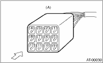
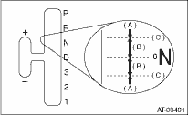
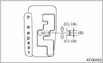

When the driving condition or starter motor operation is improper, first check the shift linkage for improper operation. If the shift linkage is functioning properly, check the inhibitor switch.
1. Disconnect the inhibitor switch connector.
2. Check continuity in inhibitor switch circuits with the select lever moved to each position.
NOTE:
• Also check that there is no continuity in ignition circuit when the select lever is in the “R”, “D”, “3”, “2” and “1” ranges.
• If the inhibitor switch does not operate, check for poor contact of the connector on transmission side.
|
Signal sent to TCM |
Range |
Pin No. |
|
P |
4 — 3 | |
|
R |
4 — 2 | |
|
N |
4 — 1 | |
|
D |
4 — 8 | |
|
3 |
4 — 7 | |
|
2 |
4 — 6 | |
|
1 |
4 — 5 | |
|
Ignition circuit |
P/N |
12 — 11 |
|
Back-up light circuit |
R |
10 — 9 |

|
(A) |
Inhibitor switch connector |
3. Check if there is continuity at equal points when the select lever is turned 1.5° to the “R” and “D” ranges from the “N” range.
If there is continuity in only one direction or in other points, adjust the inhibitor switch. 
• Models with sports shift

|
(A) |
Continuity does not exist. |
|
(B) |
Continuity exists. |
|
(C) |
1.5° |
• All models excluding models with sports shift

|
(A) |
Continuity does not exist. |
|
(B) |
Continuity exists. |
|
(C) |
1.5° |
4. Repeat the above checks for the other ranges. If there are abnormalities, adjust the select cable.